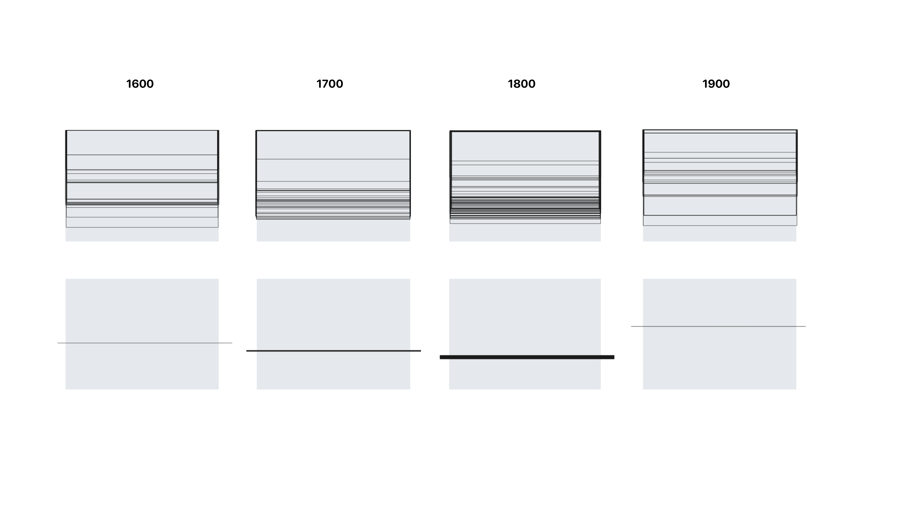

ABOUT
CLOSE
During the 17th century, Dutch painters in particular began to give massive importance to the sky, leaving almost the entire height of the canvas to its representation. The new sensitivity towards this subject came along with the first nomenclature of clouds made in 1802, for which cloudscape paintings were used as a kind of rudimental meteorological data. The Depot contains hundreds of these artworks, although not really showing them: ironically, the only thing that is always visible is the sky and the clouds reflecting on the building. Cloud of clouds by clouds, is an alternative exploration of the hidden Depot Boijmans' cloudscape collection: it works as a "cloud" platform that contains clouds paintings which are filtered according to the actual presence of clouds above the Depot: an instant tool to visualize current weather conditions, but also an ever changing online exhibition.
Horizon line height in dutch cloudscape paintings and its average dimension per century.
Paintings divided according to day time and weather conditions.